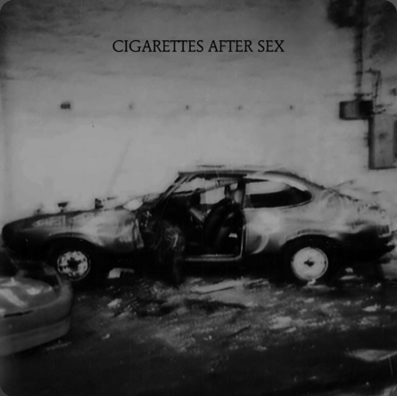

CIGARETTES AFTER SEX
La canción 'Stop Waiting' de Cigarettes After Sex se sumerge en una atmósfera de melancolía y deseo, características distintivas del estilo musical de la banda, conocida por sus melodías etéreas y letras introspectivas. La lírica presenta una serie de imágenes que sugieren una relación marcada por la dependencia y la evasión; la mención de pastillas amarillas y vino blanco simboliza un intento de escapar de la realidad o de enfrentar conflictos emocionales a través de la anestesia de las sustancias.
El estribillo refleja la ambivalencia del narrador ante la situación. A pesar de ser consciente de que la relación posee un resultado incierto y potencialmente destructivo, se siente incapaz de resistirse al magnetismo de la otra persona. En este contexto, la frase central actúa como un llamado imperativo a la acción, sugiriendo la necesidad de abandonar la inercia y tomar una determinación definitiva respecto a los sentimientos.
Con su tono minimalista y evocador, la obra invita a la reflexión sobre la naturaleza del deseo y la parálisis que genera la incertidumbre emocional. Cigarettes After Sex logra construir un espacio íntimo donde se explora la complejidad de las relaciones humanas y la eterna lucha interna entre la racionalidad y la pulsión del momento. La producción sonora, caracterizada por susurros inteligibles y arreglos minimalistas, complementa perfectamente esta narrativa de introspección y vulnerabilidad.